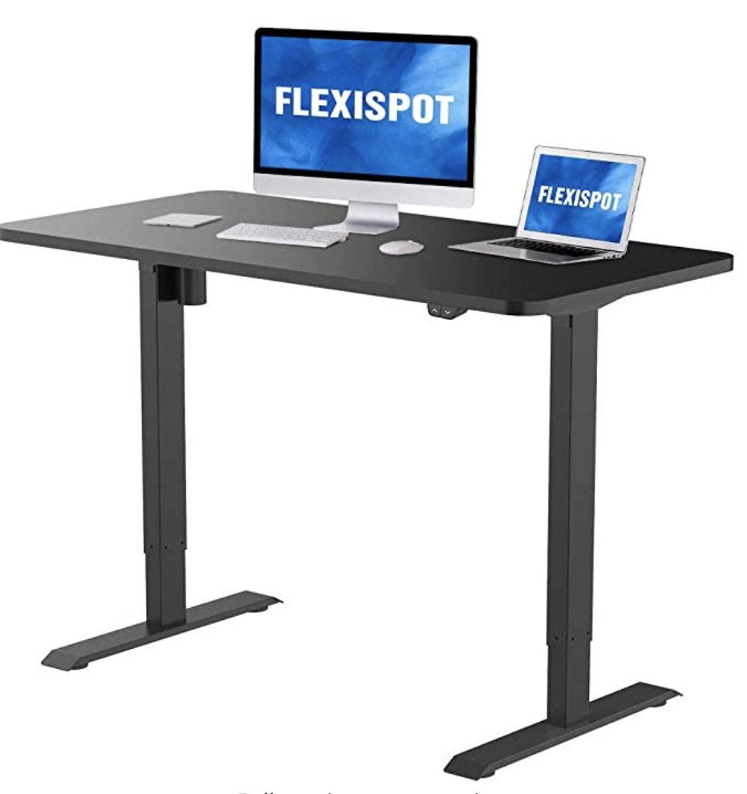
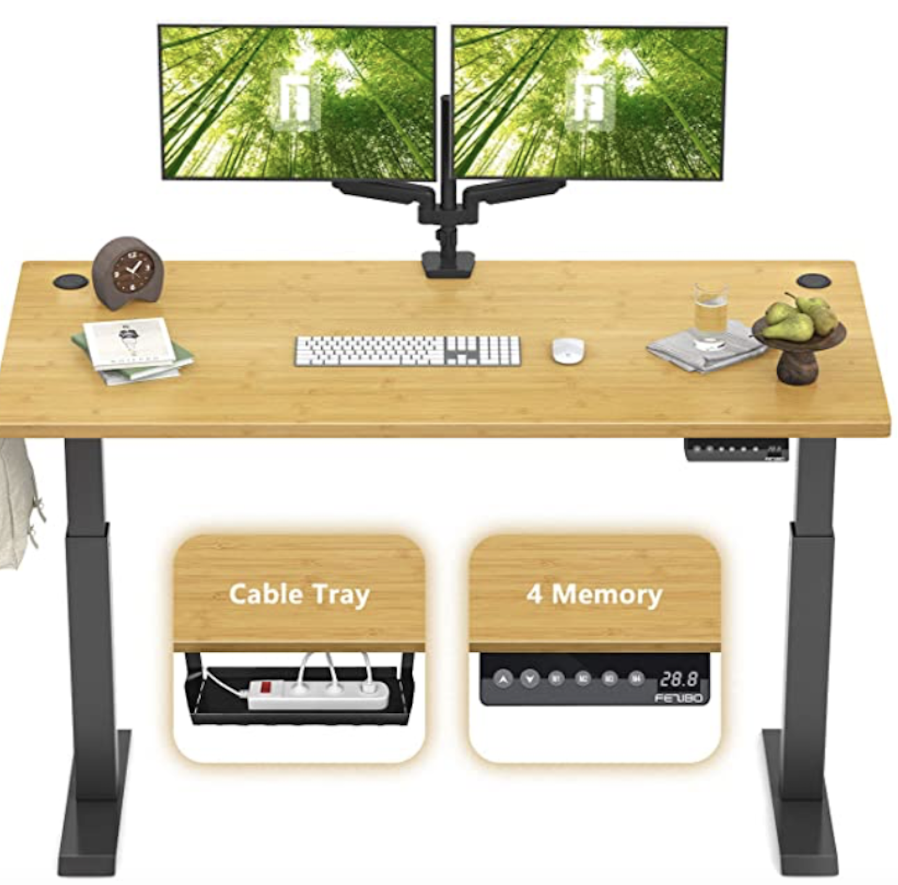
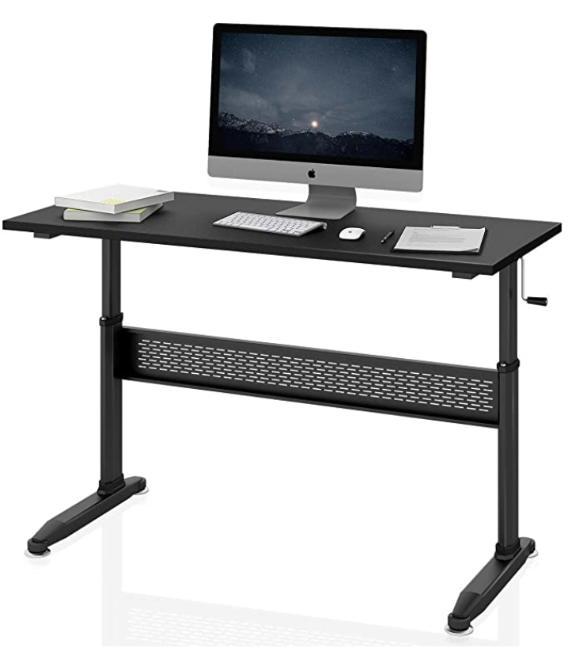
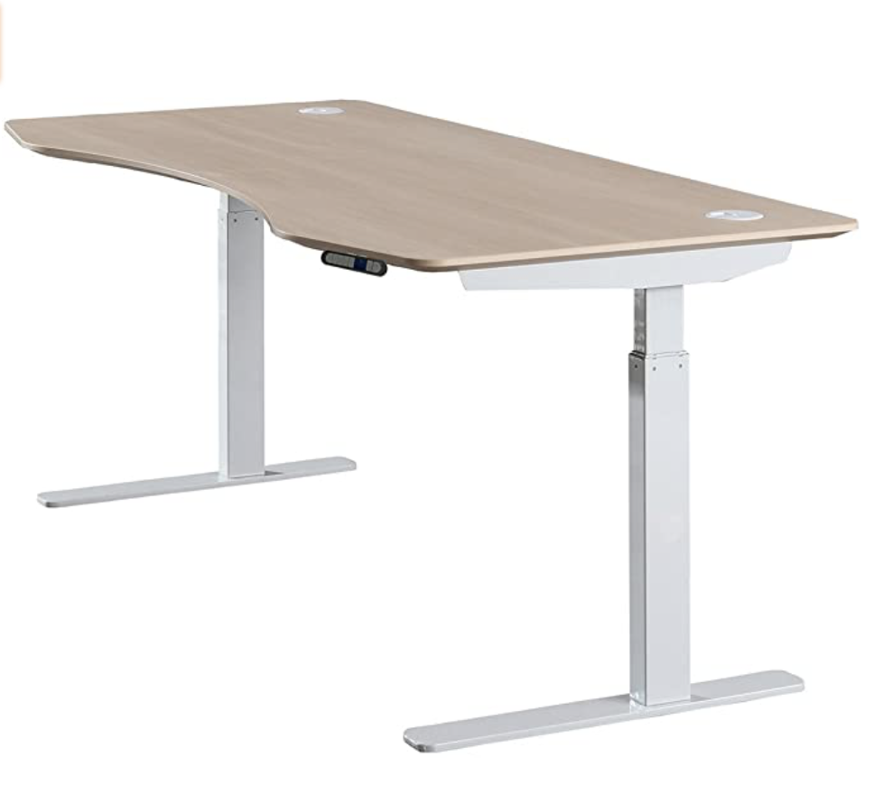
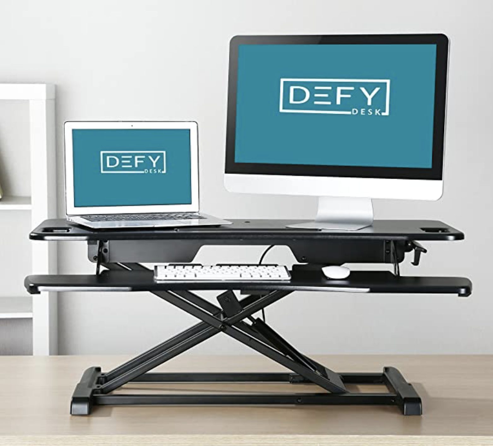
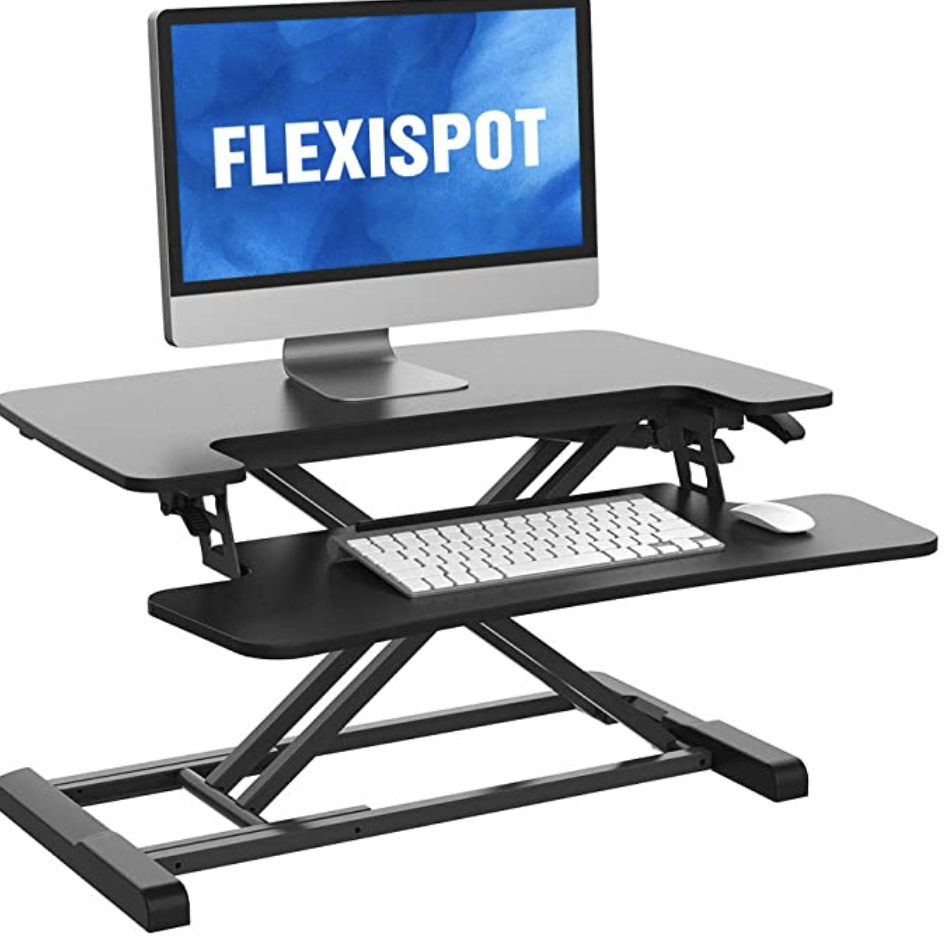

Stay tuned for more content. But to start, here are some things to consider while choosing a sit-stand desk or workstation.
Sit-Stand Desks
Sit-Stand Desks have become a popular topic over the last decade, spurring conversation and controversy. Too much of anything can become a bad thing. Similarly, a great idea used wrong can become detrimental. Sit-stand desks are a great tool to utilize to facilitate movement and increased blood flow throughout the day and research has suggested it can increase user productivity. Although, attempting to stand all day long will more than likely lead to avoidable overuse and strain of the back, hips, and legs.
Standing is a static position, creating many isometric contractions in various muscles throughout your body. Static contractions can quickly lead to general muscular fatigue and can begin to shift posture and positioning. Attempting to stand for hours on end will more than likely lead to “lazy standing”, leaning, or weight-bearing through your elbows, wrists, or hands creating hazardous conditions to those regions of the body.
Alternating, standing for transitional breaks is great and should be done in moderation. A general recommendation is to stand, if able, for 10-20 minutes every hour as tolerated. This change in position creates the opportunity for the various muscles of the body to stretch and decrease potentially developing muscular stiffness, strain, or nerve tension while remaining focused on your work. Every job and every worker is different, requiring different provisions. What is most important is to be personally aware of the developing fatigue, tension, or strain developing through your body while you continue to stay engaged in your work.
Brief Equipment Guide
There are many workstation variations which promote the sit-stand mentality, ranging from fully adjustable desks to wall mounted workstations. All have their own place for different workers. For example, a graphic designer would benefit most from a fully adjustable desk so the full work station rises with them. This decreases the need to reach or grab objects which have not raised with them and allow ample room to use open space for drawing, writing, ect. A physician may only require an adjustable monitor and keyboard if they strictly mouse and key into patients’ charts - not entailing additional equipment or surface area.
A few specific thoughts to consider when selecting your sit-stand option:
- Do you need additional work space apart from a monitor, keyboard, and mouse?
- What kind of budget do you have available?
- Does the new workstation allow for the keyboard and mouse to stay at the same height while seated and standing (recommended)?
- Do you need the whole workstation to lift, or just the computer equipment for intermittent breaks?
- Do you want a new desk or something to be added to your current desk?
- Will the new desk require additional equipment to maintain good ergonomics (monitor height, chair adjustability, and arm positioning)?
- What will fit in your current office space?
These thought-provoking questions should guide you to select what equipment will work best for you. If you have any further questions regarding sit-stand desks or general ergonomics, feel free to reach out to rootergonomics.com.
Equipment Examples and Recommendations
As with all equipment, sit-stand desks can run on a spectrum dependent on specific needs and price. The following are examples and options depicting the various differences you may need or want for your specific workstation. Although these products are recommended, please conduct your own research and find which item fits best with your particular needs.
Flexispot Standing Desk: Basic
48” x 30”
This a great option for transitioning to a brand new desk. The large desk area is ideal for work requiring multiple monitors or roles encompassing artistic design (drawing, writing, creating). This desk raises electronically but does not have memory to store your preferred heights, requiring thoughtful adjustment with each use. Consider the ability to adjust the keyboard to ensure proper ergonomics and arm positioning.
$279.99
Click to Purchase on Amazon.com
FEZIBO Adjustable Electric Desk
48” x 24”
Similarly to the Flexisport Standing Desk, this unit is large and study with easy assembly. The full, sturdy desk space rises with you making it unnecessary to reorganize your space for typing, mousing, or writing tasks. The slightly increase in price is found in it’s memory to store multiple heights for quick and accessible transition from sit-to-stand consistently./p>
$299.99
Click to Purchase on Amazon.com
DEVAISE Adjustable Desk: Hand Crank
55.1” x 23.6”
A slightly more affordable option with a manual crank to be fitted to either side of the desk adjust to the space you have. This desk is slightly slimmer and longer providing adequate space for jobs requiting heavy computer use such as programming or finance. Consider also using a mountable/ clamping keyboard and mouse tray to fully utilize the desk space and have complete adjustability when transitioning from sit-stand.
$229.99
Click to Purchase on Amazon.com
ApexDesk Elite Series Electric
60” x 29.5”
This behemoth of a sit-stand desk provides absolute space to complete daily office tasks. Crafted with steel and engineered wood, this desk combines efficiency with style. It is fully electric with programable memory and contoured front edging, allowing the user to sit closer for focused and engaged work. With a desk this size, beware the temptation to weight-bear or lean onto the desk while standing.
$599.99
Click to Purchase on Amazon.com
Defy Convertible Standing Riser Table
37.4” x 24.2”
For the causal office worker who is dependent primarily on computer use and has little need for excessive table space. This unit rests on an already established desk. The keyboard and mouse rise with the monitor platform, negating the need to adjust ergonomics before and after transition. Although the keyboard/mouse platform has minimal height adjustability apart from the full unit so this product would pair best with a height adjustable chair to ensure perfect ergonomic positioning while seated.
$159.99
Click to Purchase on Amazon.com
FlexiSpot 28” Standing Desk Converter
28.3”x 16.3”
This unit is a very efficient and affordable sit-stand transition surface. The keyboard tray is set at a consistent level as the whole unit but is removable if desired. It has a sturdy design for the price with minimal shaking while typing. AS with the Defy Convertible Standing Riser Table, this unit would be well paired with an adjustable chair to ensure proper keyboard height while seated. Be sure to measure your desk’s depth prior to purchase as the product is deeper than maybe visually anticipated.
$99.99
Click to Purchase on Amazon.com
